pacman::p_load(ggrepel, patchwork,
ggthemes, hrbrthemes,
tidyverse) Hands-on Exercise 2
Beyond ggplot2 Fundamentals
2.1 Overview
This exercise focuses on mastering ggplot2 extensions to create professional, publication-quality graphics with precise label placement and styling.
Let’s learn how to use ggrepel, ggthemes, and hrbrthemes for enhanced visuals, and patchwork to combine multiple plots into a single composite figure.
2.2 Getting started
In this part we install the tools and import the data.
2.2.1 Installing and loading the required libraries
This is the code chunk to install the required libraries.
2.2.2 Importing data
This part we still use the same exam data as Hands-on Exercise 1.
exam_data <- read_csv("data/Exam_data.csv")2.3 Beyond ggplot2 Annotation: ggrepel
Adding labels to a graph is hard when there are too many data points.The following is an example of using ggplot to display the relationship between Math score and English score of the exam data set.
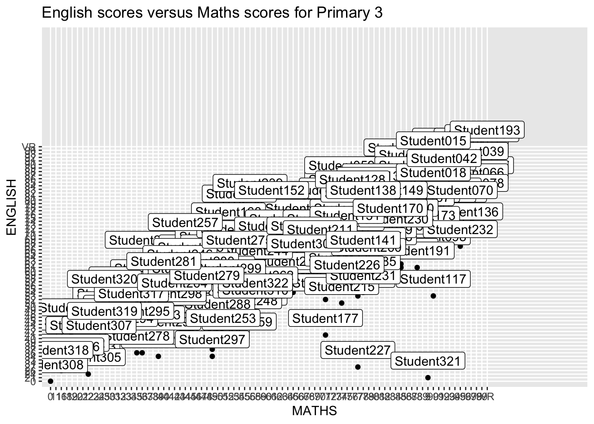
Apparently too much labels are displayed that we can not see the data at all. So we use ggrepel instead, ggrepel is an extension of ggplot2 package which provides geoms for ggplot2 to repel overlapping text as in our examples on the right.
2.4 Beyond ggplot2 Themes
ggplot2 comes with eight built-in themes, they are: theme_gray(), theme_bw(), theme_classic(), theme_dark(), theme_light(), theme_linedraw(), theme_minimal(), and theme_void()
Let’s try theme_gray() first :
exam_data$MATHS <- as.numeric(as.character(exam_data$MATHS))
exam_data$ENGLISH <- as.numeric(as.character(exam_data$ENGLISH))
ggplot(data=exam_data,
aes(x = MATHS)) +
geom_histogram(bins=20,
boundary = 100,
color="grey25",
fill="grey90") +
theme_gray() +
ggtitle("Distribution of Maths scores") 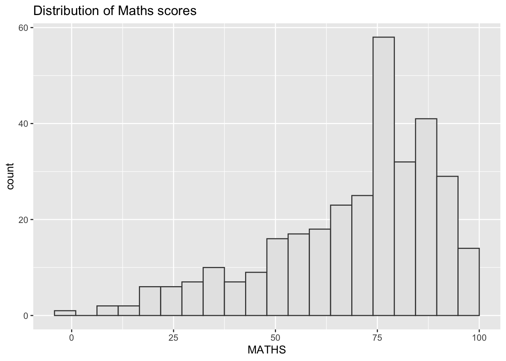
Next try theme_bw() :
ggplot(data=exam_data,
aes(x = MATHS)) +
geom_histogram(bins=20,
boundary = 100,
color="grey25",
fill="grey90") +
theme_bw() +
ggtitle("Distribution of Maths scores") 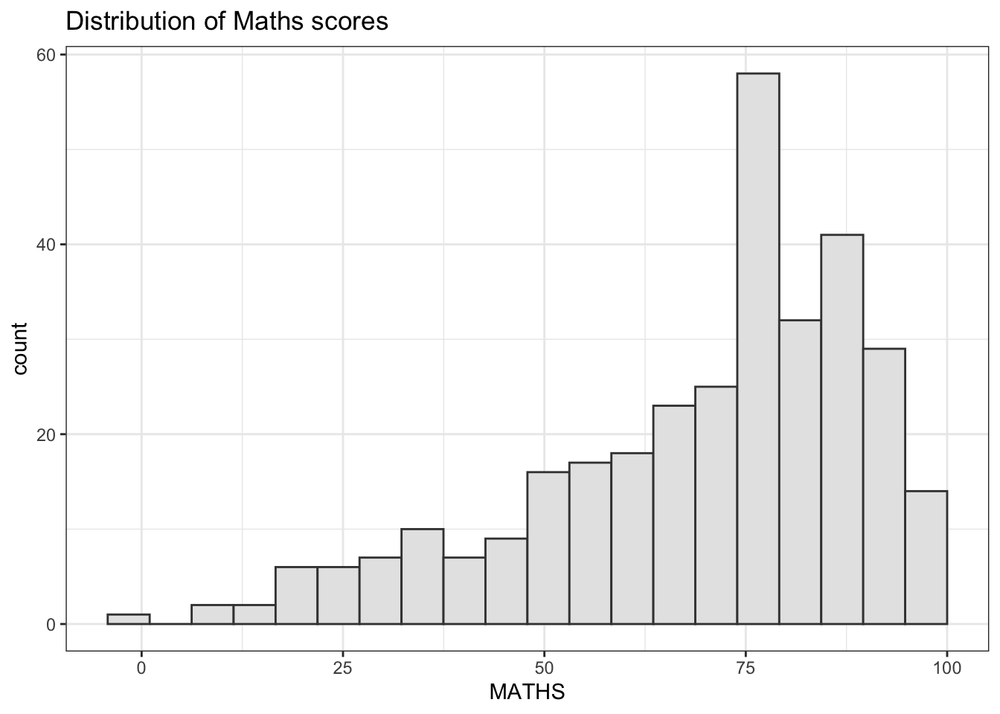
Try theme_minimal() :
ggplot(data=exam_data,
aes(x = MATHS)) +
geom_histogram(bins=20,
boundary = 100,
color="grey25",
fill="grey90") +
theme_minimal() +
ggtitle("Distribution of Maths scores") 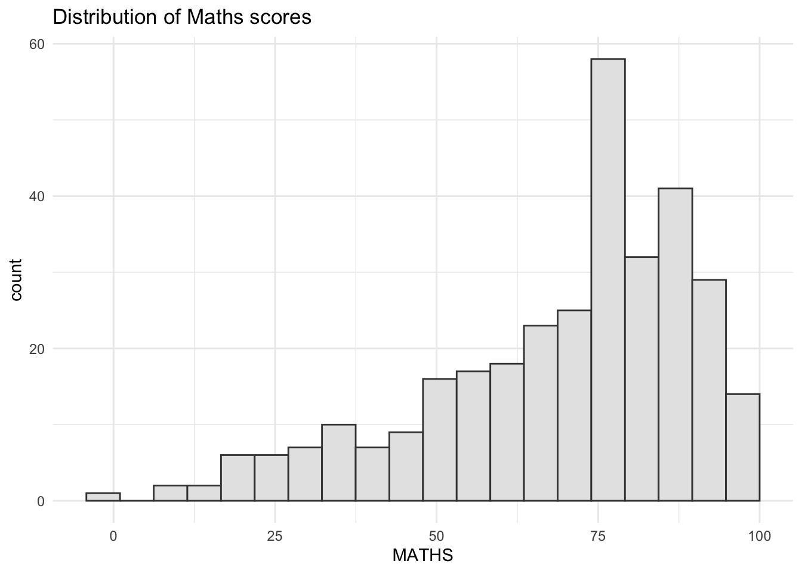
2.4.1 Working with ggtheme package
The above themes look similar,next we try ‘ggplot2’ themes ,which look of plots by Edward Tufte, Stephen Few, Fivethirtyeight, The Economist, ‘Stata’, ‘Excel’, and The Wall Street Journal, among others.
The Economist theme:
ggplot(data=exam_data,
aes(x = MATHS)) +
geom_histogram(bins=20,
boundary = 100,
color="grey25",
fill="grey90") +
ggtitle("Distribution of Maths scores") +
theme_economist()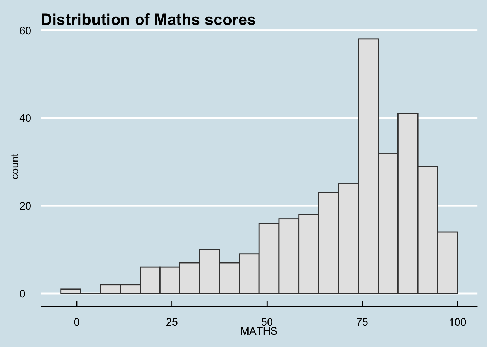
The Fivethirtyeight theme:
ggplot(data=exam_data,
aes(x = MATHS)) +
geom_histogram(bins=20,
boundary = 100,
color="grey25",
fill="grey90") +
ggtitle("Distribution of Maths scores") +
theme_fivethirtyeight()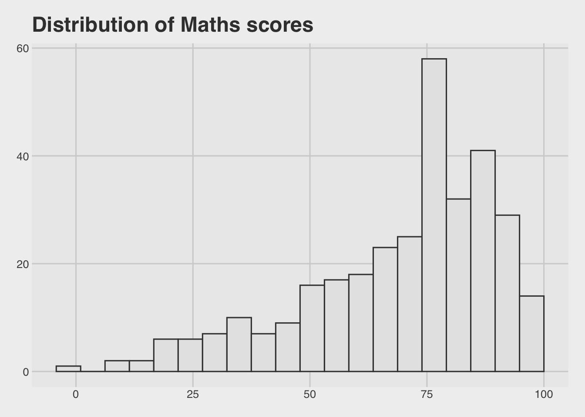
2.4.2 Working with hrbthems package
The hrbrthemes package gives a simple chart style that improves how text looks, including label positions and fonts.
ggplot(data=exam_data,
aes(x = MATHS)) +
geom_histogram(bins=20,
boundary = 100,
color="grey25",
fill="grey90") +
ggtitle("Distribution of Maths scores") +
theme_ipsum()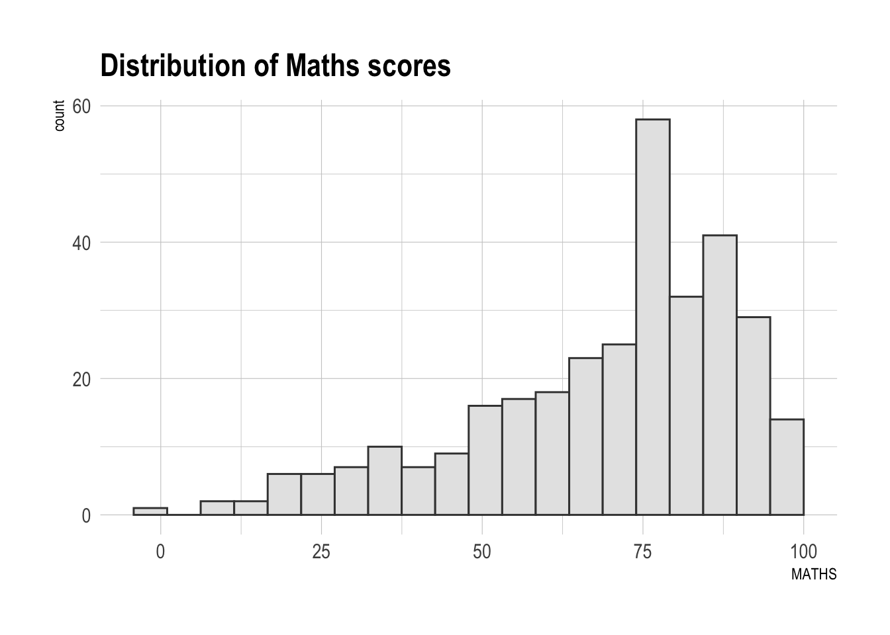
The second goal is to improve productivity in a production workflow. This workflow is where hrbrthemes should be used. You can read this vignette to learn more.
ggplot(data=exam_data,
aes(x = MATHS)) +
geom_histogram(bins=20,
boundary = 100,
color="grey25",
fill="grey90") +
ggtitle("Distribution of Maths scores") +
theme_ipsum(axis_title_size = 18,
base_size = 15,
grid = "Y")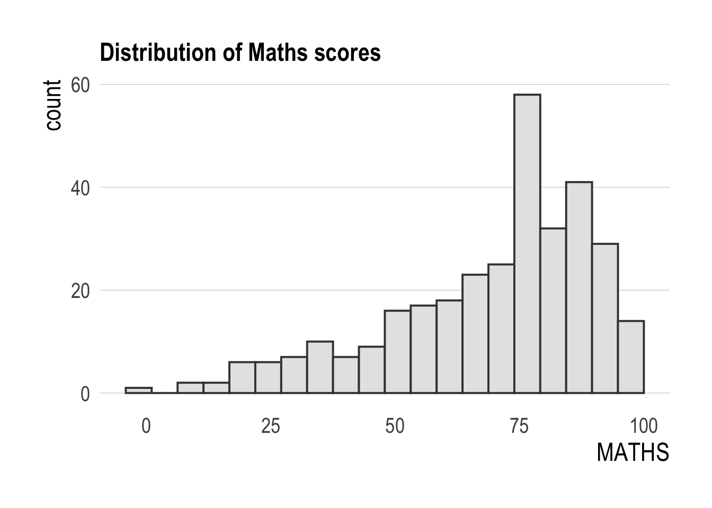
TipWhat can we learn from the code chunk above?
axis_title_sizeargument is used to increase the font size of the axis title to 18,base_sizeargument is used to increase the default axis label to 15, andgridargument is used to remove the x-axis grid lines.
2.5 Beyond Single Graph
Sometimes we need to use multiple graphs to tell a clear and interesting story. Some ggplot2 extensions provide functions to combine several graphs into one figure. We try in the following code chunks.
First, we assign the plots to variables.
This is p1:
p1 <- ggplot(data=exam_data,
aes(x = MATHS)) +
geom_histogram(bins=20,
boundary = 100,
color="grey25",
fill="grey90") +
coord_cartesian(xlim=c(0,100)) +
ggtitle("Distribution of Maths scores")
p1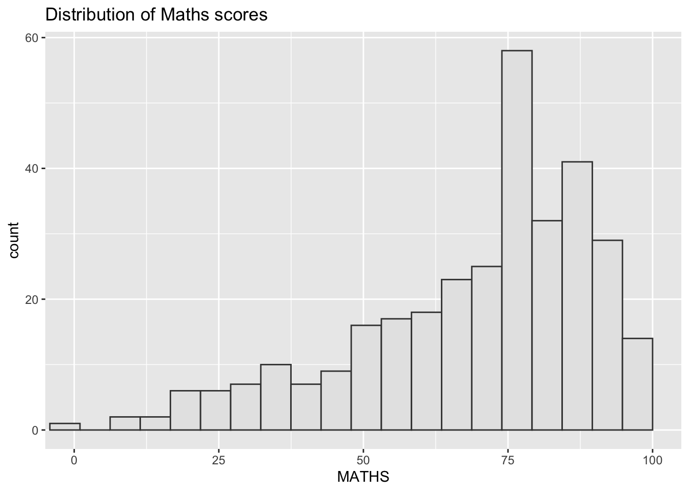
This is p2:
p2 <- ggplot(data=exam_data,
aes(x = ENGLISH)) +
geom_histogram(bins=20,
boundary = 100,
color="grey25",
fill="grey90") +
coord_cartesian(xlim=c(0,100)) +
ggtitle("Distribution of English scores")
p2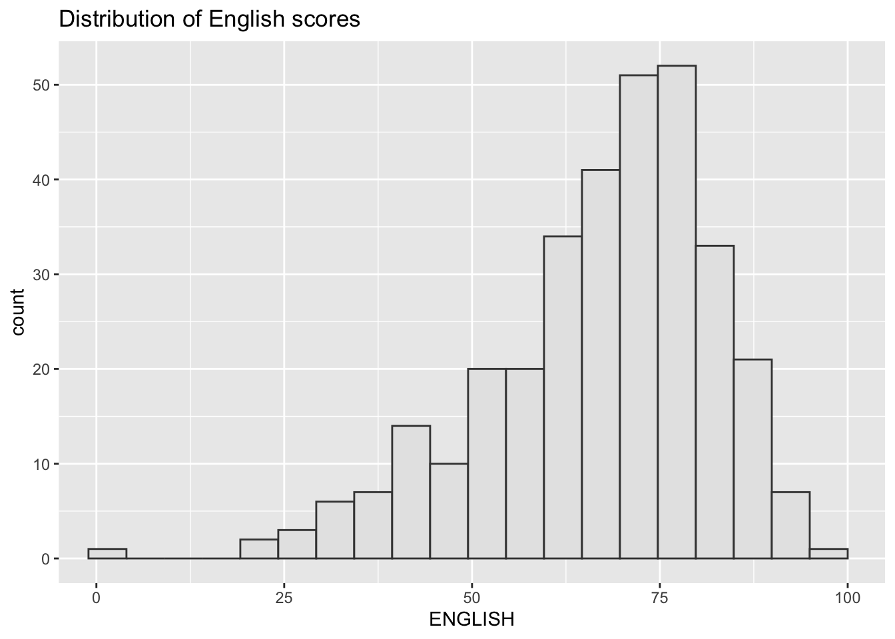
This is p3:
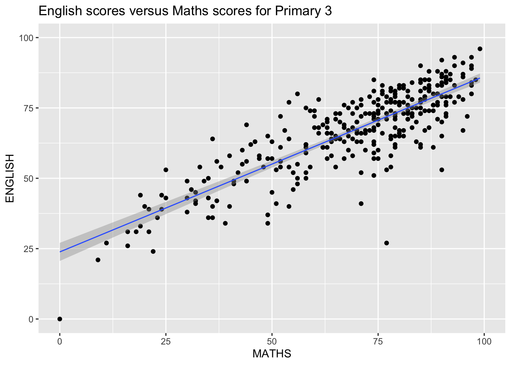
2.5.1 Creating Composite Graphics: pathwork methods
Now we try to combine p1,p2 and p3.
Patchwork package has a very simple syntax where we can create layouts super easily. Here’s the general syntax that combines:
Two-Column Layout using the Plus Sign +.
Parenthesis () to create a subplot group.
Two-Row Layout using the Division Sign
/
2.5.2 Combining two ggplot2 graphs
First,we try to combine two graphs using +, the code is very simple:
p1 + p2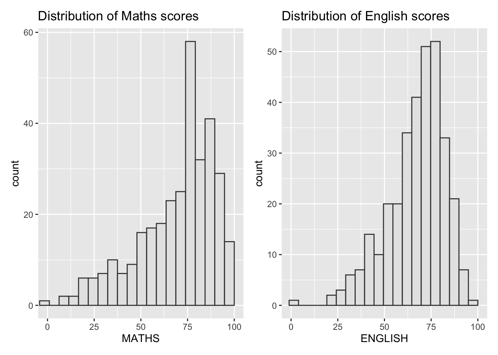
2.5.3 Combining three ggplot2 graphs
Then we try to combine three graphs, we can use / and | to control the layout:
(p1 / p2) | p3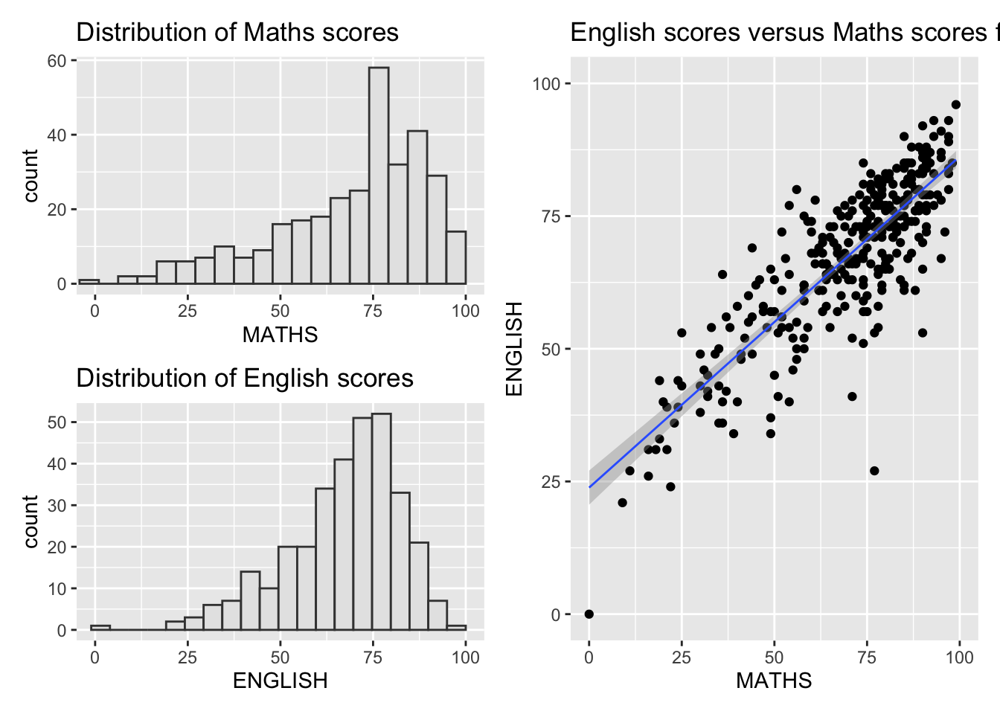
2.5.4 Creating a composite figure with tag
To help identify subplots in the text, patchwork also provides automatic tagging, as shown in the figure below.
((p1 / p2) | p3) +
plot_annotation(tag_levels = 'I')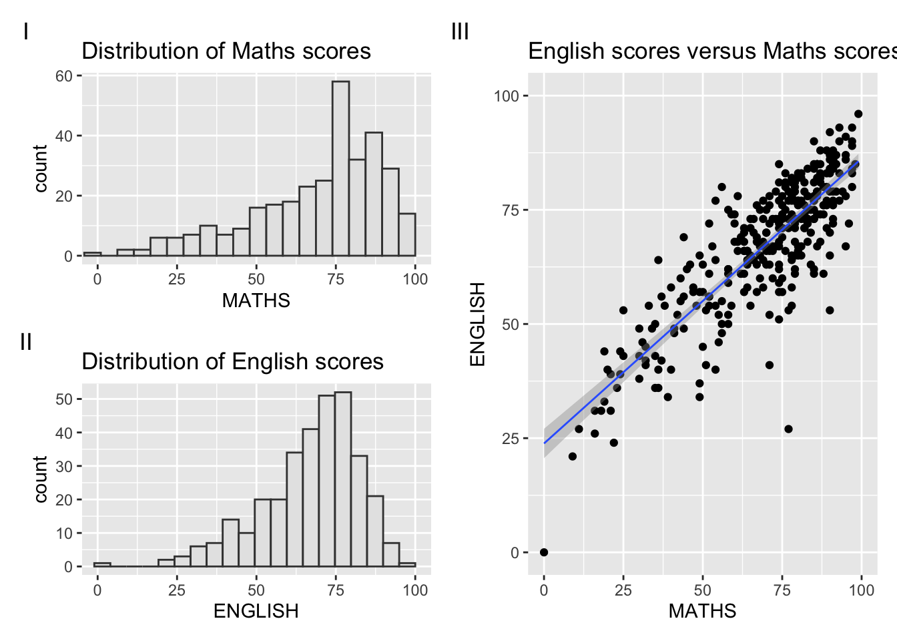
2.5.5 Creating figure with insert
Besides arranging plots side by side, patchwork also provides the inset_element() function. It allows us to place one or more plots or graphic elements on top of or below another plot.
p3 + inset_element(p2,
left = 0.02,
bottom = 0.7,
right = 0.5,
top = 1)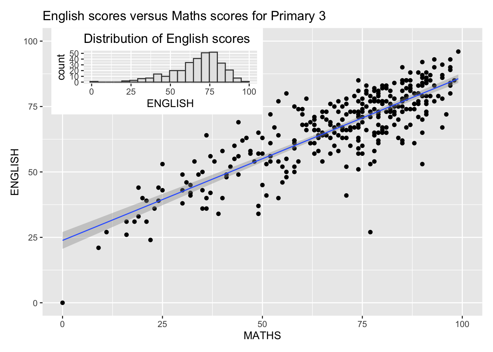
2.5.6 Creating a composite figure by using patchwork and ggtheme
Then we try to combine graphs using different themes,this makes the combined graph more professional.
patchwork <- (p1 / p2) | p3
patchwork & theme_economist()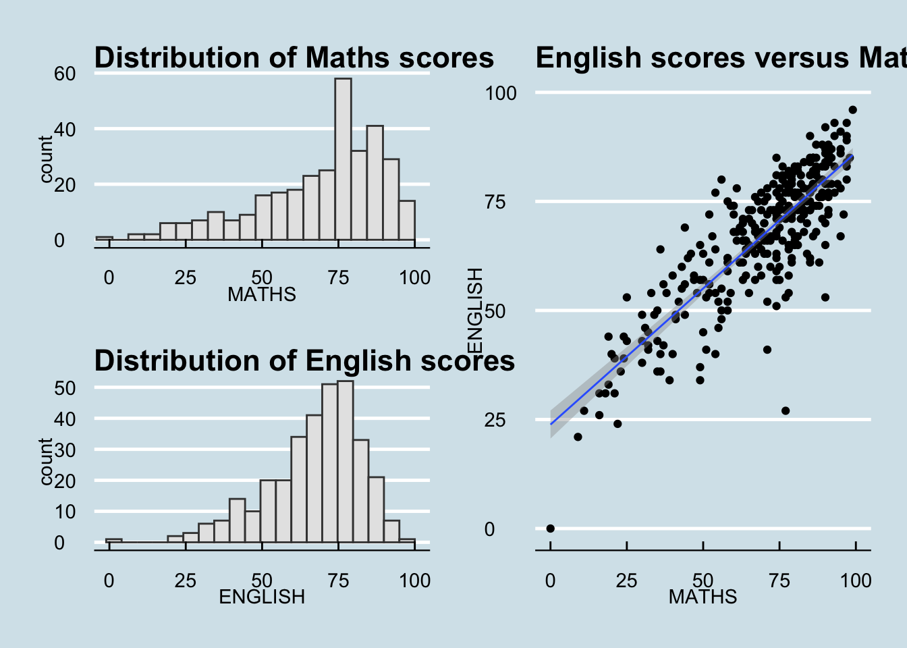
We can try different themes:
patchwork <- (p1 / p2) | p3
patchwork & theme_fivethirtyeight()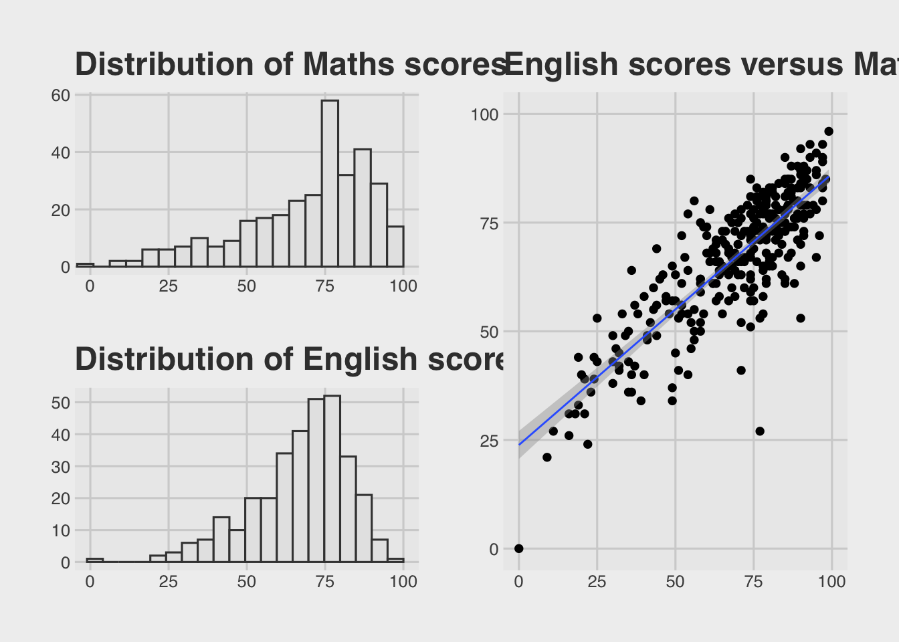